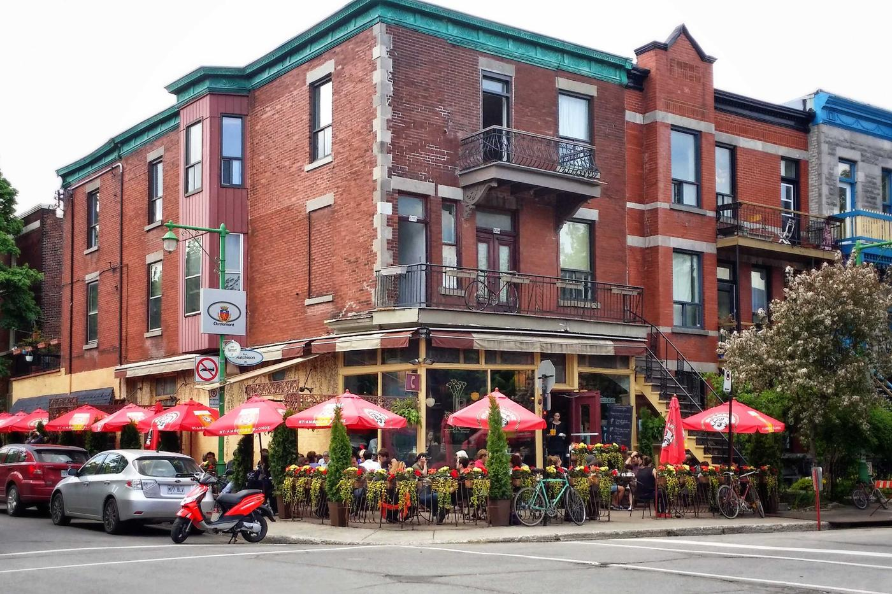

I work out what your business is losing online, then build the thing that fixes it.
Web design, development, and the analytics to show it worked.
How long a booking page can take on a phone before the customer is already gone.
How long you wait for a reply. Every message reaches me, not a form queue.
Most business websites are not broken in ways anybody notices. They leak, quietly, in the gap between what a customer wants and what the site lets them do. I find the leak first. Then I build the thing that closes it. Most business websites are not broken in ways anybody notices. They leak, quietly, in the gap between what a customer wants and what the site lets them do.
I find the leak first. Then I build the thing that closes it.
We build for claritymomentumlongevitytrust

THE SYMPTOMS
How I work
How I work
How I work
On every project
On every project
Always
How I work
Web Design
Web Development
Mobile Applications
Internal Tools

Analytics & Reporting
Search & Speed
SIX STAGES
The call, and the figure
One hour on your business and your customers. No pitch. Then scope, price and date, fixed and in writing before anything starts.
Design, then build
You approve how it looks and works before a line of it gets built. Then progress you can see, with regular updates rather than silence.
Test, then hand over
Real devices, slow connections, and the paths your customers actually take. Then documentation, your dashboard, and support once it is live.
Questions I get asked first.
No. There is no basic tier and no template option, because I do not sell one.
Every build is written for the business it belongs to.
Design, build, launch, search setup, an analytics dashboard, documentation, and support after hand over.
You get the analytics to show the work actually did something.
Yes. Websites, customer-facing apps, staff tools, and internal systems that replace the spreadsheets a business has outgrown.
It depends on scope. Most projects run several weeks end to end.
Whatever the answer is, you get the date in writing before any work begins, along with the scope and the figure.
Me. The person you speak to on the first call is the person who builds it, and the person who answers when something breaks.
No account managers and no handoffs to a queue.
Ninety days of hands-on support while it settles into real traffic.
After that you have the documentation and the dashboard to run it in-house, and I am still reachable if you want me.
A shared space for timelines and deliverables, async updates through the week, and calls kept for decisions that need them.
Every message reaches me directly.
Still wondering about something? Ask me directly.